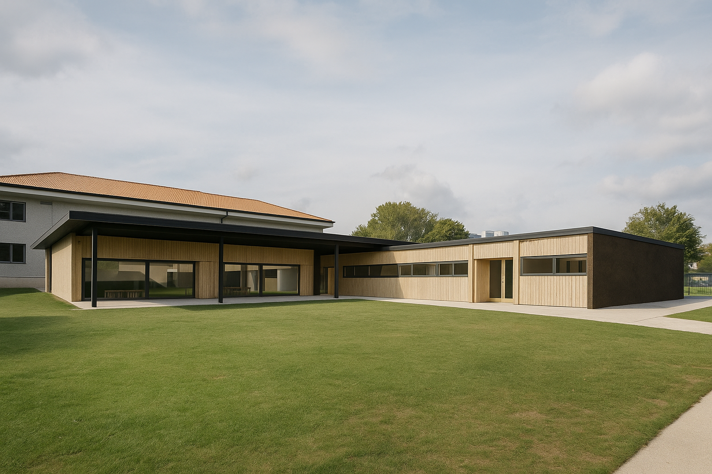
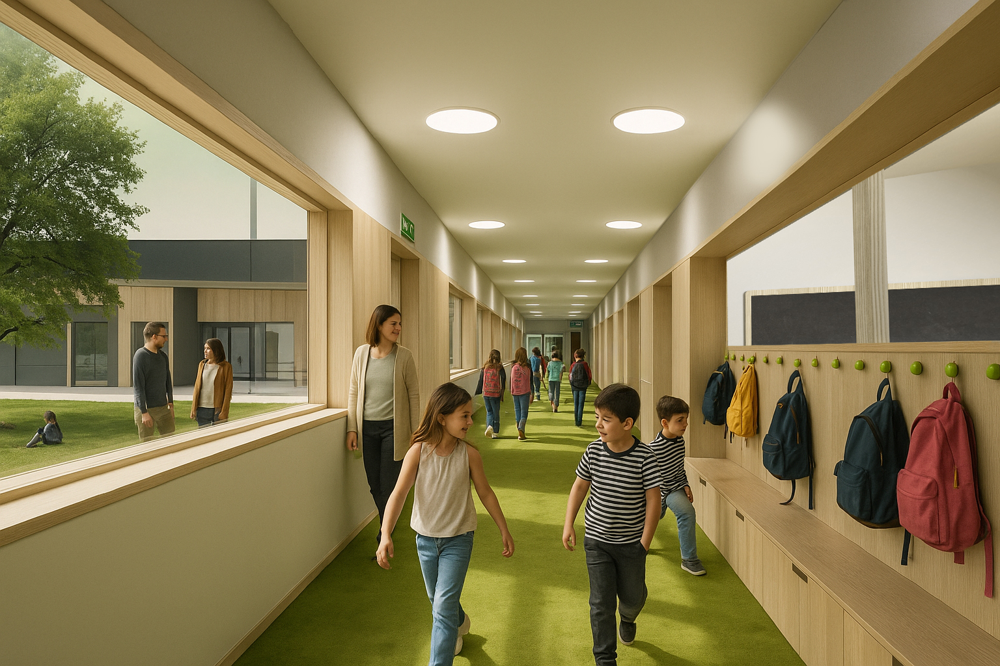
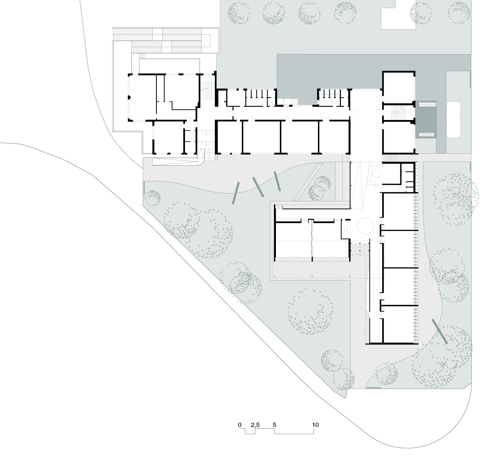
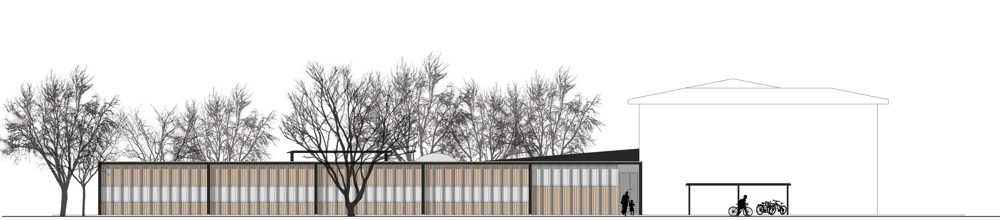
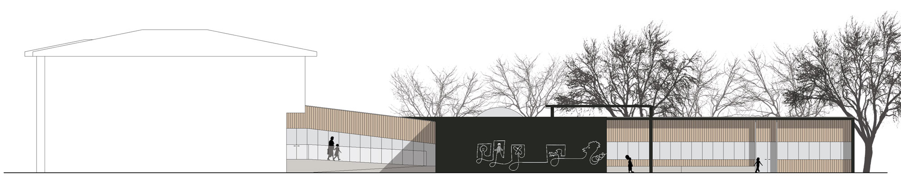
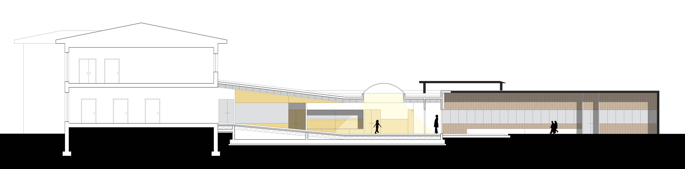
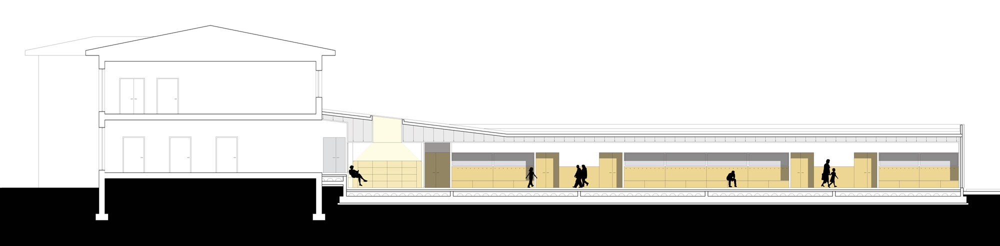
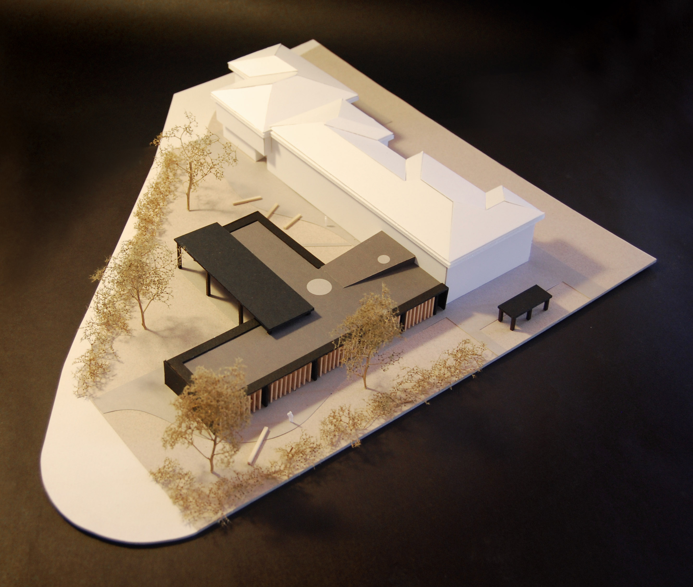
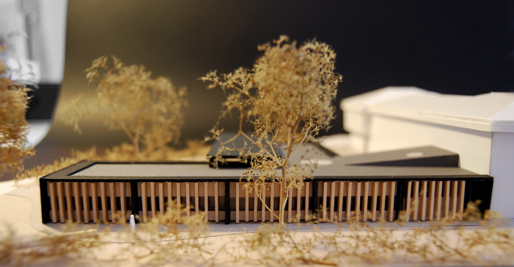

Boltiere primaryschool
A competition project developed with Galeotti Rizzato studio, 20014-2015
The extension of Boltiere Elementary School is developed entirely on the ground floor, ensuring functional independence from the existing building. The new wing, composed of two perpendicular volumes, houses a multipurpose room and a separable entrance area that can also be used outside school hours. The intervention avoids demolitions and ensures the school remains fully operational during construction. Connection between the old and new structures is achieved through an external ramp, eliminating the need to replicate the original building’s 90 cm height difference. Externally, the structure features dark concrete lintels that taper outward, creating a sense of lightness. On the east-facing façade, a modular system of larch wood slats filters natural light and accommodates external blinds, achieving a balance between aesthetics and environmental sustainability.














